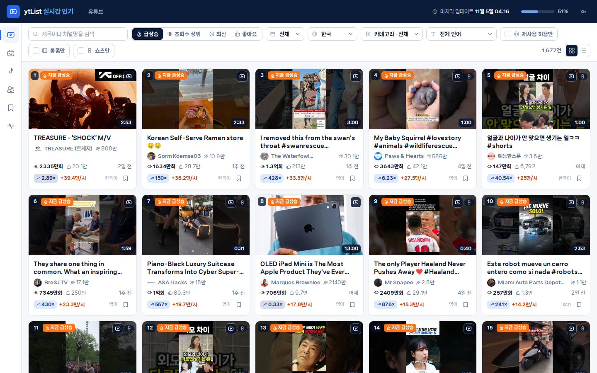
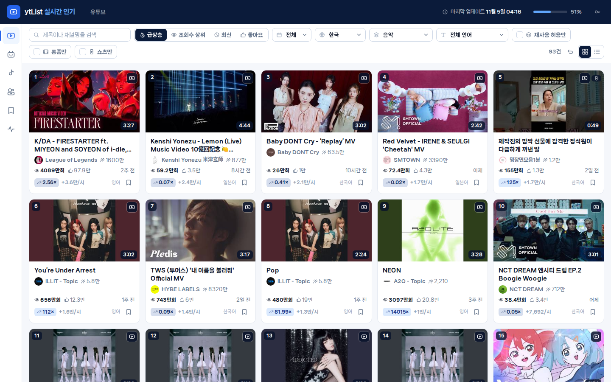
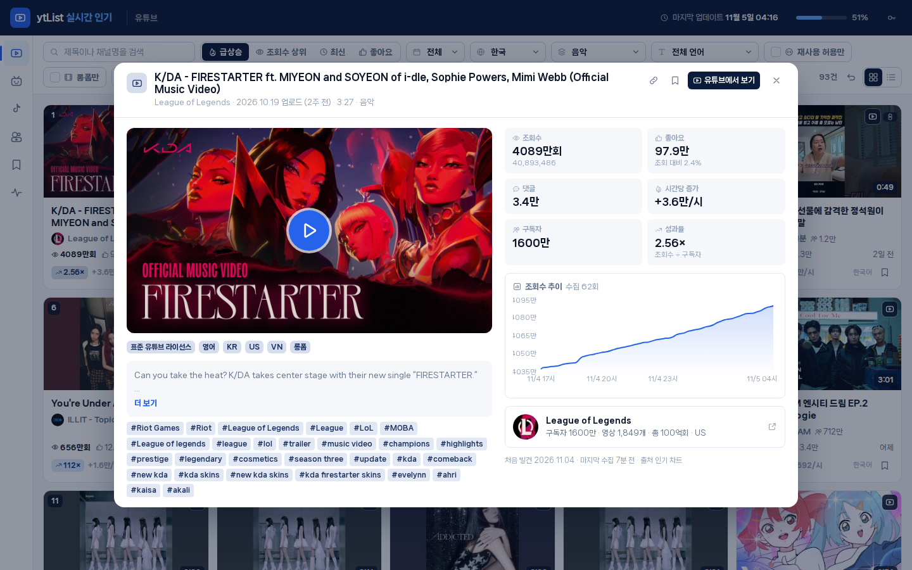
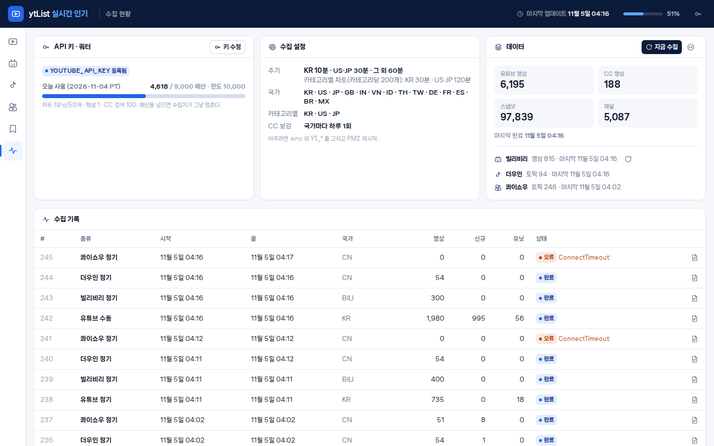

ytList — what it is
An internal, non-public web tool used by employees of our company to see what is currently popular on YouTube, filtered by region, category, language, licence and format. It runs on a private network and is not reachable from the internet.
Internal use onlyNo end-user accountsNo redistributionNot a public service
사내 직원만 쓰는 비공개 도구입니다. 유튜브 인기 차트를 국가·카테고리·언어·재사용 허용(CC)·롱폼/쇼츠로 걸러 봅니다. 사내망(192.168.x.x)에서만 접속되며 인터넷에 공개되지 않습니다. 이 페이지는 YouTube API 심사(감사·할당량 증량)를 위해 도구를 설명하는 소개 페이지입니다.
Screens




How we use the YouTube Data API v3
| Endpoint | Purpose | Frequency |
|---|---|---|
videos.list chart=mostPopular | The "most popular" chart per region and per video category — the core of the tool | Every 10–120 minutes depending on region |
videoCategories.list | Category names per region | Once a day (cached) |
channels.list | Subscriber count and channel thumbnail shown next to each video | Once a day per channel (cached) |
search.list videoLicense=creativeCommon | Find reusable (CC BY) videos, which rarely appear in the chart | Once a day per region |
Quota usage is recorded per request in our database. When the configured daily budget is reached, collection stops until the quota resets. Playback always uses the official YouTube IFrame Player, and every item links to its page on youtube.com. We do not modify, hide or re-host any YouTube content, and we do not show ads.
쓰는 엔드포인트는 위 넷뿐입니다. 호출마다 유닛을 적립하고 하루 예산을 넘으면 수집이 자동으로 멈춥니다. 재생은 공식 IFrame 플레이어, 모든 항목은 youtube.com 으로 링크됩니다. 광고 없음.
Data & privacy policy
| What we store | Public video metadata (video ID, title, description, tags, thumbnail URL, publish date, duration, licence, category, default language) and public channel metadata (channel ID, name, thumbnail URL, subscriber count). |
|---|---|
| Statistics | View, like and comment counts are kept as time-series snapshots for at most 30 days and are deleted automatically after that, in line with the YouTube API Services Developer Policies. Only the latest values are shown in the list. |
| What we do not collect | No YouTube user data of any kind — no comments, subscriptions, watch history, or personal information. The tool has no sign-in and no end-user accounts; employees use it anonymously on the internal network. |
| Sharing | Data is not sold, redistributed, published, merged with other services or used for advertising. It stays on one internal server. |
| Cookies / tracking | None. The tool sets no cookies and uses no analytics. |
| Third-party terms | By using the tool, employees agree to be bound by the YouTube Terms of Service. Google's privacy policy applies to data processed by YouTube: policies.google.com/privacy. |
| Retention of API keys | The API key is stored only in a server-side environment file and is never shown in the UI or logs. |
| Contact | Questions about this tool or its data handling: the project owner on GitHub, github.com/betona1. |
저장하는 것은 공개 영상·채널 메타데이터뿐이며, 조회수 등 통계 스냅샷은 30일 뒤 자동 삭제됩니다. 유튜브 사용자 데이터(댓글·구독·시청기록·개인정보)는 전혀 수집하지 않습니다. 로그인·쿠키·분석 도구 없음, 외부 제공·판매·광고 없음.
Technical summary
Python 3 / FastAPI backend with a SQLite database and a resident collector process; React front end. Source code is kept in a private repository. This page is static and served from GitHub Pages solely to describe the tool for API review purposes.